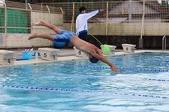
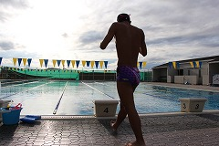
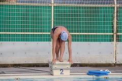

メッセージ
生徒が主体となり、活動することで、自分でよく考え、自主的に取り組んでいます。仲間同士で指摘し、支え合い、高め合っています。
部活内容
週５日(日・月曜日休み)
5～9月は学校のプールで、10～3月は学校近くのアルゴ室内プールにて活動
部員数
全２３名
１年生 ６名
２年生 ７名
３年生 １０名
- 
- 
- 
これまでの主な戦績
近畿高等学校 新人水泳競技大会 (10月)
女子200m個人メドレー・男子100mバタフライ ２名が出場予定
タイム決勝 総合第２位
兵庫県高等学校ジュニア選手権水泳競技大会 (9月)
女子200m個人メドレー タイム決勝 総合第３位
男子100mバタフライ タイム決勝 総合第３位 (近畿大会出場決定)
日本高等学校選手権水泳競技大会 (８月) インターハイ
女子200m背泳ぎ タイム決勝 総合18位
近畿高等学校選手権水泳競技大会 (７月) 近畿総体
女子200m背泳ぎ タイム決勝 総合第２位
女子200m個人メドレー タイム決勝 総合第12位
男子100mバタフライ タイム決勝 総合第３位 (女子１名インターハイ出場決定)
兵庫県高等学校選手権水泳競技大会 (６月) 県総体
女子200m背泳ぎ タイム決勝 総合第１位
女子200m個人メドレー タイム決勝 総合第３位
男子100mバタフライ タイム決勝 総合第７位 (男女各１名近畿総体出場決定)
近畿高等学校 新人水泳競技大会 (10月)
男子100mバタフライ １名が出場
兵庫県高等学校ジュニア選手権水泳競技大会 (9月)
男子100mバタフライ タイム決勝 総合第５位 (近畿大会出場決定)
近畿高等学校 新人水泳競技大会 (10月)
男子50m自由形・男子50m平泳ぎ・女子50mバタフライ ３名が出場
兵庫県高等学校ジュニア選手権水泳競技大会 (9月)
男子50m自由形 B決勝 第１位 (総合９位) (近畿大会出場決定)
男子50m平泳ぎ B決勝 第３位 (総合１１位) (近畿大会出場決定)
女子50mバタフライ 決勝 総合第７位 (近畿大会出場決定)
東播高等学校総体水泳競技大会 (8月)
男子50m自由形 第２位
男子50mバタフライ 第１位
女子100mバタフライ 第１位
女子200mバタフライ 第２位
東播地区招待高等学校水泳競技大会 (6月)
男子50m自由形 第１位
男子100m自由形 第３位
女子100mバタフライ 第１位
女子200m自由形 第３位
東播オープン春季水泳競技大会 (5月)
男子50m自由形 第２位
男子50mバタフライ 第２位
男子100m自由形 第３位
女子50m平泳ぎ 第１位
女子50m平泳ぎ 第３位
女子200m平泳ぎ 第２位
女子200m背泳ぎ 第３位
女子50mバタフライ 第３位
女子100mバタフライ 第２位
女子100m個人ﾒﾄﾞﾚｰ 第３位